← 返回旅行网页9 座城市 · 27 家精选酒店
补充原先没有住宿条目的城市，每城 3 家。以成熟全服务、历史精品与设计酒店为标准，保留四星与小型精品的真实定位；不把其他品牌标为希尔顿或艾迪逊。
核对日期：2026-09-25。预算为 2027 年春季每间每晚两人入住的人工估算，未锁定入住日，不代表房态或可订报价。升级房型的区间包含人工预留溢价；早餐、税费及取消条件另核实，特殊节庆可能超出预算。€1≈¥8 仅用于规划。
龙达
龙达 Catalonia 酒店
Catalonia Ronda · 4 星 · 设计精品
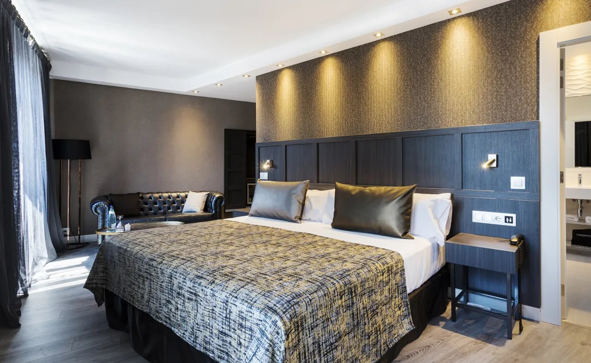
斗牛场正对面的精品酒店，适合以步行为主游览龙达。屋顶泳池与现代室内设计是主要吸引力。
屋顶泳池；餐厅；SPA；健身房
选房提示：更接近 Only YOU 的设计精品路线；景观房与基础房不同，预订时确认朝向。
Virgen de la Paz 16, 29400 Ronda
| 房型 | 人工预算／晚 |
|---|
| Superior 高级房 · 25㎡ | €149–230
约 ¥1,192–¥1,840 |
| Deluxe 豪华房 · 31㎡ | €175–270
约 ¥1,400–¥2,160 |
| Junior Suite 小套房 · 36㎡ | €220–340
约 ¥1,760–¥2,720 |
官网未选日期的 Superior 展示起价 €149、Deluxe €167、Junior Suite €177；预算另留日期变化余量。
酒店官网 ↗ · 预算参考来源 ↗ · 照片来源龙达 Catalonia Reina Victoria 酒店
Catalonia Reina Victoria · 4 星 · 景观度假
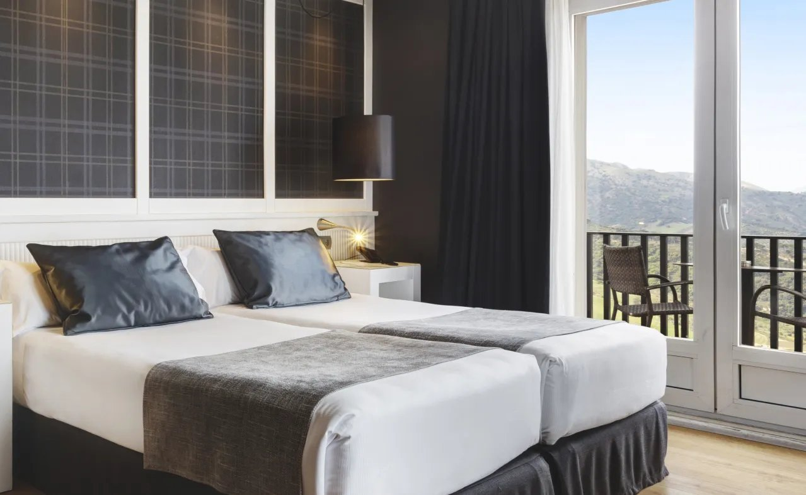
历史建筑与花园环绕的景观酒店，适合希望安静休息、看山谷并使用水疗设施的旅客。
花园；室外泳池；SPA；景观餐厅
选房提示：基础双人房较紧凑；想看峡谷应选择 Tajo 景观露台房，不能默认所有房型都有景观。
Jerez 25, 29400 Ronda
| 房型 | 人工预算／晚 |
|---|
| Double 双人房 · 17㎡ | €140–220
约 ¥1,120–¥1,760 |
| Terrace with Tajo views 峡谷露台房 · 20㎡ | €180–280
约 ¥1,440–¥2,240 |
| Junior Suite 小套房 · 28㎡ | €230–350
约 ¥1,840–¥2,800 |
官网公开页面双人房起价约 €130–140，峡谷露台房约 €149 起；均未绑定目标入住日。
酒店官网 ↗ · 预算参考来源 ↗ · 照片来源龙达国营景观酒店
Parador de Ronda · 4 星 · 峡谷景观
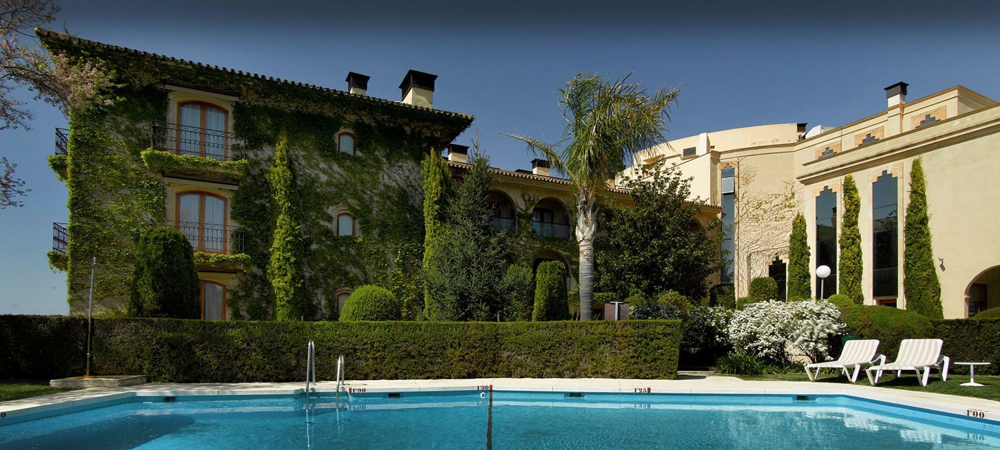
位于新桥旁的国营酒店，适合把峡谷和老城景观作为住宿重点。建筑原址是旧市政厅，并非古堡。
峡谷景观；餐厅；季节性泳池
选房提示：优先核对景观朝向。四星景观型酒店，设计和服务风格与艾迪逊不同。
Plaza de España s/n, 29400 Ronda
| 房型 | 人工预算／晚 |
|---|
| Doble Estándar 标准双人房 | €180–290
约 ¥1,440–¥2,320 |
| Doble Superior 高级双人房 | €240–370
约 ¥1,920–¥2,960 |
| Dúplex 复式房 | €300–460
约 ¥2,400–¥3,680 |
聚合页低位样本约 €92 起；新桥景观位置和日期差异较大，预算采用更宽的区间。
酒店官网 ↗ · 预算参考来源 ↗ · 照片来源托莱多
托莱多 Eugenia de Montijo 傲途格精选酒店
Eugenia de Montijo, Autograph Collection · 5 星 · Marriott Autograph Collection
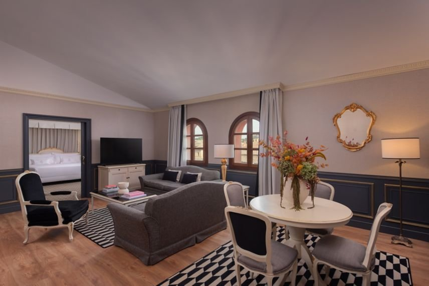
位于托莱多老城的宫殿精品酒店，属于万豪傲途格精选；适合重视历史氛围和步行游览的旅客。
宫殿建筑；SPA；餐厅及酒廊
选房提示：老城道路狭窄，抵达前向酒店确认车辆通行和停车安排。
Plaza de Juego de Pelota 7, 45002 Toledo
| 房型 | 人工预算／晚 |
|---|
| Elegance 客房 | €150–260
约 ¥1,200–¥2,080 |
| Chantilly 客房 | €190–320
约 ¥1,520–¥2,560 |
聚合页有低位促销起价，日期和方案不统一；结合宫殿五星定位，基础房按 €150–260 做预算。
酒店官网 ↗ · 预算参考来源 ↗ · 照片来源托莱多 Eurostars Palacio Buenavista 酒店
Eurostars Palacio Buenavista · 5 星 · 宫殿度假
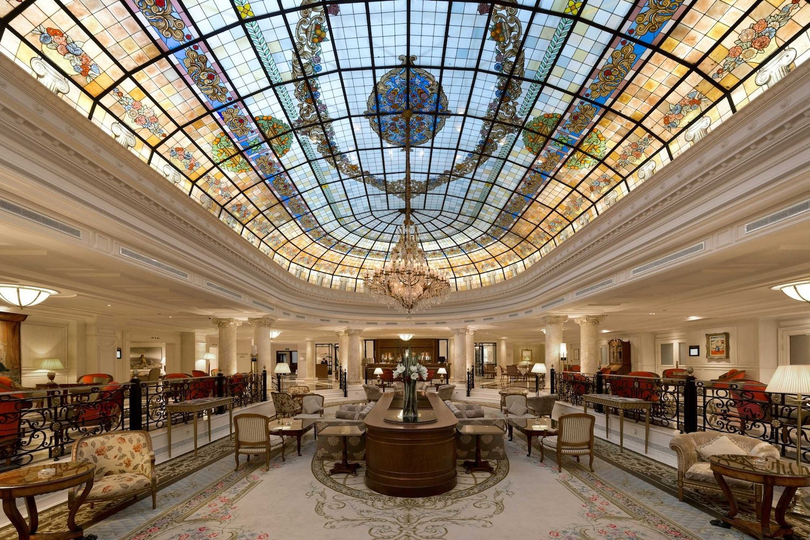
空间宽敞的宫殿型五星酒店，配备大型 SPA、花园和泳池，适合自驾或包车出行。
大型 SPA；花园；季节性泳池；停车
选房提示：位于老城外，官网说明距历史中心不足 5 公里；需要安排往返交通。现品牌为 Eurostars。
Concilios de Toledo 1, 45005 Toledo
| 房型 | 人工预算／晚 |
|---|
| Superior Double 高级双人房 | €140–240
约 ¥1,120–¥1,920 |
| Deluxe Double 豪华双人房 | €180–300
约 ¥1,440–¥2,400 |
| Junior Suite 小套房 | €260–420
约 ¥2,080–¥3,360 |
聚合页公开起价约 €87；目标日期尚未核价，按全服务五星酒店留出预算余量。
酒店官网 ↗ · 预算参考来源 ↗ · 照片来源托莱多国营酒店
Parador de Toledo · 4 星 · 老城全景
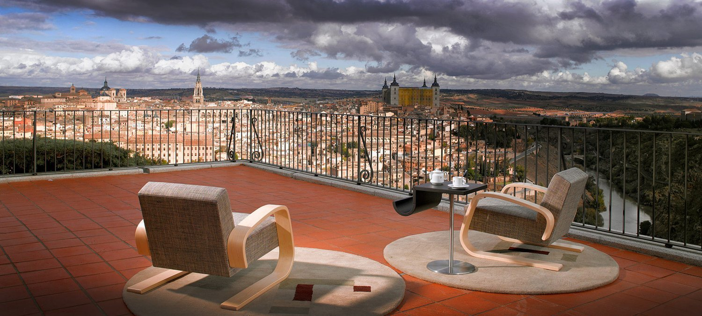
位于河对岸山坡，可从露台欣赏托莱多老城全景，适合重视景观和自驾便利的旅客。
全景露台；餐厅；季节性泳池
选房提示：不在老城步行核心区。高级房明确强调城市景观，基础房需另确认。
Cerro del Emperador, carretera TO-3100 km 1, 45002 Toledo
| 房型 | 人工预算／晚 |
|---|
| Doble Estándar 标准双人房 | €140–230
约 ¥1,120–¥1,840 |
| Doble Superior 城景高级房 | €190–310
约 ¥1,520–¥2,480 |
| Junior Suite 小套房 | €260–420
约 ¥2,080–¥3,360 |
公开其他日期标准房约 €96–153，页面四月统计参考约 €196／晚；采用更宽的规划预算。
酒店官网 ↗ · 预算参考来源 ↗ · 照片来源塞哥维亚
塞哥维亚 Áurea Convento Capuchinos 酒店
Áurea Convento Capuchinos · 5 星 · 修道院精品
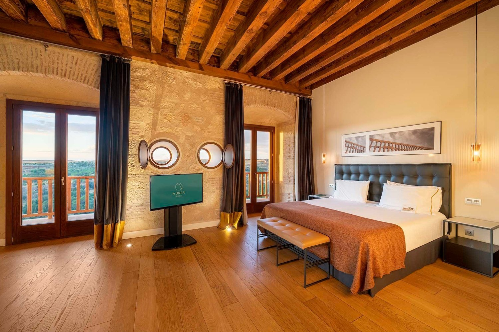
由历史修道院改造的五星酒店，位于塞哥维亚老城，适合喜欢历史空间、安静氛围和步行游览的旅客。
历史建筑；花园；餐厅；SPA
选房提示：SPA 通常另收费，官网说明房价不含 SPA；抵达路线需注意老城交通。
Plazuela Capuchinos 2, 40001 Segovia
| 房型 | 人工预算／晚 |
|---|
| Superior Double 高级双人房 · 25㎡ | €150–260
约 ¥1,200–¥2,080 |
| Deluxe 大床房 · 30㎡ | €190–320
约 ¥1,520–¥2,560 |
| Junior Suite 小套房 · 40㎡ | €270–430
约 ¥2,160–¥3,440 |
公开页面低位约 €101、平均参考约 €225／晚；日期不统一，基础房按 €150–260 规划。
酒店官网 ↗ · 预算参考来源 ↗ · 照片来源塞哥维亚国营酒店
Parador de Segovia · 4 星 · 城市全景
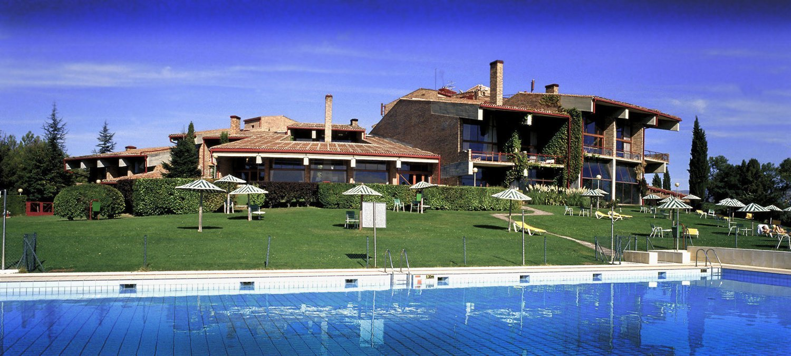
位于城市外围的景观型国营酒店，可远望塞哥维亚，适合包车、自驾和希望房间空间较宽裕的旅客。
城市景观；餐厅；停车；泳池设施
选房提示：官网说明距历史中心约 3 公里，不能按老城步行酒店来安排。泳池开放另询。
Carretera de Valladolid A-601 km 107, 40003 Segovia
| 房型 | 人工预算／晚 |
|---|
| Doble Estándar 标准双人房 | €110–190
约 ¥880–¥1,520 |
| Junior Suite 小套房 | €180–300
约 ¥1,440–¥2,400 |
公开页面其他日期标准房约 €63–100 起；为日期变化留出余量。
酒店官网 ↗ · 预算参考来源 ↗ · 照片来源Real Segovia 酒店
Hotel Real Segovia · 4 星 · 老城精品
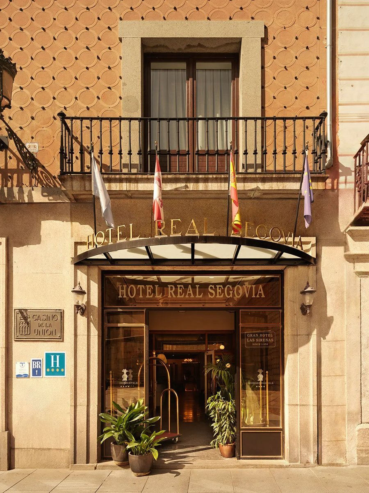
位于 Juan Bravo 步行街的四星精品酒店，适合想从酒店直接步行看老城、把位置放在首位的旅客。
老城步行位置；观景公共空间；精品客房
选房提示：这是规模较小的四星备选，公共设施不及大型五星酒店；步行街上下车需提前确认。
Juan Bravo 30, 40001 Segovia
| 房型 | 人工预算／晚 |
|---|
| Standard Double 标准双人房 | €100–170
约 ¥800–¥1,360 |
| Superior Double with views 景观高级房 | €130–210
约 ¥1,040–¥1,680 |
| Suite 套房 | €200–320
约 ¥1,600–¥2,560 |
官网房型页景观高级双人房展示 €80 起（未选日期）；预算包含日期变化余量。
酒店官网 ↗ · 预算参考来源 ↗ · 照片来源萨拉曼卡
萨拉曼卡 Don Gregorio 大酒店
Grand Hotel Don Gregorio · 5 星 · 宫殿精品
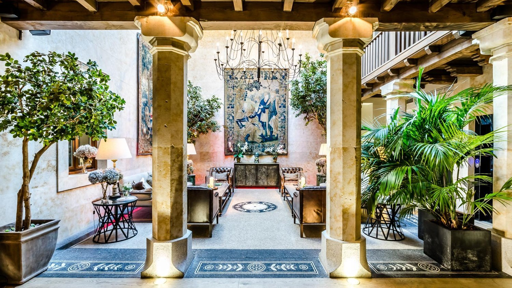
位于历史中心的宫殿精品酒店，规模精巧，适合重视安静氛围、餐饮和个性化服务的旅客。
历史宫殿；SPA；餐厅；精品客房
选房提示：房量较少；SPA 使用与餐厅需提前预约，套房和基础房价差明显。
San Pablo 80–82, 37008 Salamanca
| 房型 | 人工预算／晚 |
|---|
| Double Deluxe 豪华双人房 · 23㎡ | €220–340
约 ¥1,760–¥2,720 |
| Double Deluxe Superior 高级豪华房 · 33㎡ | €280–420
约 ¥2,240–¥3,360 |
| Suite 套房 · 54㎡ | €420–650
约 ¥3,360–¥5,200 |
公开其他日期样本约 €169–212 起；按小型五星精品酒店预留更宽预算。
酒店官网 ↗ · 预算参考来源 ↗ · 照片来源萨拉曼卡 Rector 精品酒店
Hotel Rector · 5 星 · 安静精品
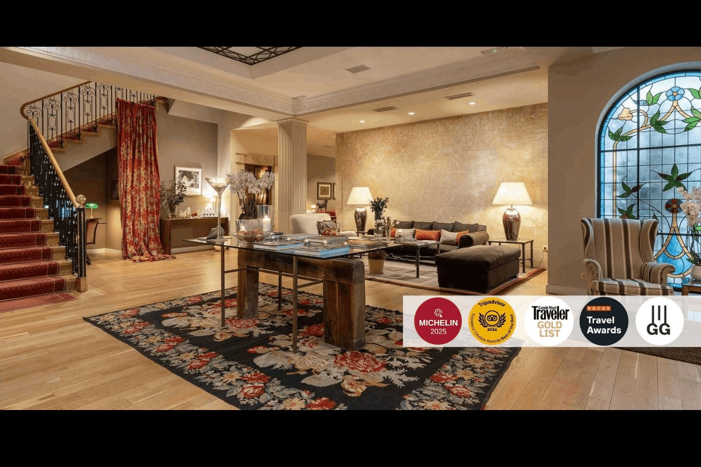
靠近 Casa Lis 和大教堂的小型精品酒店，官网列 14 间客房，适合把安静休息和细致服务放在首位的旅客。
小型精品；早餐；私人车库；小型健身房
选房提示：餐饮和公共设施规模较小，定位偏私密精品；停车位请提前联系。
Paseo del Rector Esperabé 10, 37008 Salamanca
| 房型 | 人工预算／晚 |
|---|
| Double 双人房 | €270–390
约 ¥2,160–¥3,120 |
| Superior Double 高级双人房 | €340–480
约 ¥2,720–¥3,840 |
| Junior Suite Interior 内景小套房 | €430–620
约 ¥3,440–¥4,960 |
公开其他日期双人房约 €269–301、高级房约 €345 起；预算区间已作取整。
酒店官网 ↗ · 预算参考来源 ↗ · 照片来源萨拉曼卡 Hospes Palacio de San Esteban 酒店
Hospes Palacio de San Esteban · 5 星 · 历史精品
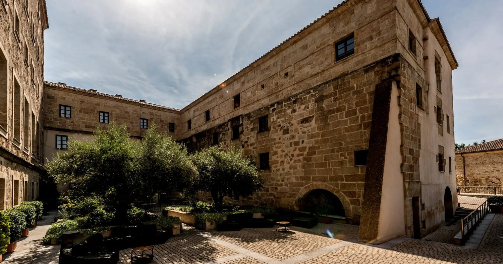
由旧修道院改造的五星酒店，靠近主要古迹，兼有花园、历史建筑和泳池休闲空间。
历史修道院；季节性泳池；餐厅；有限停车位
选房提示：适合希望住在历史中心又有户外休闲空间的旅客；泳池开放季节需复核。
Arroyo de Santo Domingo 3, 37008 Salamanca
| 房型 | 人工预算／晚 |
|---|
| Superior 高级房 | €170–280
约 ¥1,360–¥2,240 |
| Deluxe 豪华房 | €220–350
约 ¥1,760–¥2,800 |
| Junior Suite 小套房 | €300–470
约 ¥2,400–¥3,760 |
公开其他日期双人房约 €116 起、豪华房约 €147 起；较近期同城参考约 €170–182，预算留余量。
酒店官网 ↗ · 预算参考来源 ↗ · 照片来源圣地亚哥
圣地亚哥天主教双王国营酒店
Parador de Santiago de Compostela · 5 星 · 历史地标
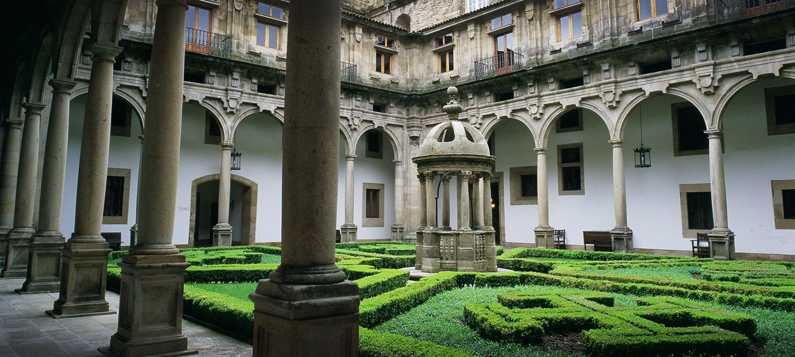
位于大教堂旁广场的历史地标酒店，宫殿庭院和历史氛围突出，适合希望住在圣地亚哥核心位置的旅客。
大教堂旁；历史庭院；餐厅；艺术收藏
选房提示：历史建筑各房型格局不同，广场景观需明确预订；车辆进入广场请提前联系酒店。
Praza do Obradoiro 1, 15705 Santiago de Compostela
| 房型 | 人工预算／晚 |
|---|
| Doble Estándar 标准双人房 | €220–360
约 ¥1,760–¥2,880 |
| Doble Superior 高级双人房 | €300–460
约 ¥2,400–¥3,680 |
公开聚合页约 €134 起；地标位置与季节影响明显，春季行程按较宽区间预算。
酒店官网 ↗ · 预算参考来源 ↗ · 照片来源圣地亚哥 Palacio del Carmen 傲途格精选酒店
Hotel Palacio del Carmen, Autograph Collection · 5 星 · Marriott Autograph Collection
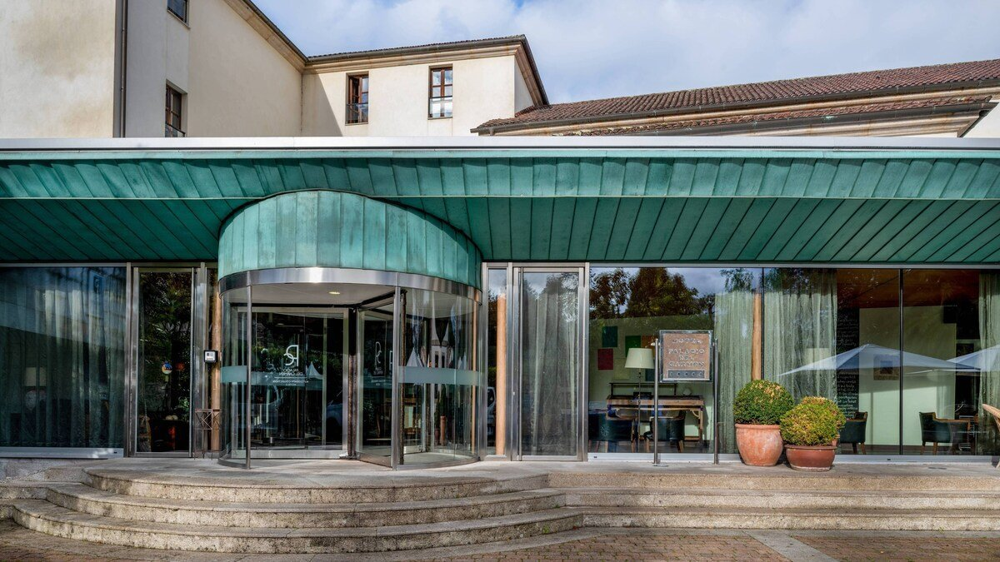
由旧修道院改造的万豪傲途格精选酒店，位于老城边缘，适合兼顾历史氛围与完整酒店设施。
花园；室内泳池；健身房；餐厅
选房提示：官网介绍距大教堂步行约 7 分钟；自驾可关注酒店停车安排。
Oblatas s/n, 15703 Santiago de Compostela
| 房型 | 人工预算／晚 |
|---|
| Deluxe King 豪华大床房 | €170–290
约 ¥1,360–¥2,320 |
| Deluxe Twin 豪华双床房 | €180–300
约 ¥1,440–¥2,400 |
| Junior Suite Cathedral View 教堂景观小套房 | €290–450
约 ¥2,320–¥3,600 |
公开其他日期豪华大床房约 €155 起、双床房约 €222 起；预算不表示目标日期有房。
酒店官网 ↗ · 预算参考来源 ↗ · 照片来源圣地亚哥 NH Collection 酒店
NH Collection Santiago de Compostela · 5 星 · 全服务酒店
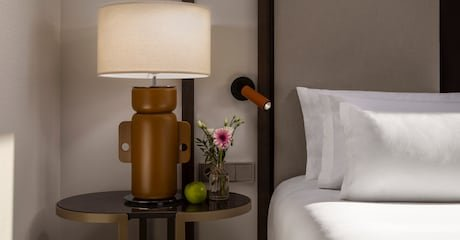
公园环境中的现代五星酒店，适合希望有泳池、健身和较完整设施的旅客。
室内外泳池；健身房；餐厅；停车
选房提示：在历史核心区外围，官网介绍步行至老城约 10 分钟；不是广场旁酒店。
Avenida Burgo das Nacións 4, 15705 Santiago de Compostela
| 房型 | 人工预算／晚 |
|---|
| Superior 高级房 | €130–220
约 ¥1,040–¥1,760 |
| Superior with View 景观高级房 | €160–260
约 ¥1,280–¥2,080 |
| Junior Suite 小套房 | €230–370
约 ¥1,840–¥2,960 |
公开基础房约 €85 起，近期用户样本约 €185；预算考虑春季和房量变化。
酒店官网 ↗ · 预算参考来源 ↗ · 照片来源毕尔巴鄂
毕尔巴鄂 The Artist 艺术大酒店
The Artist Grand Hotel of Art · 5 星 · 艺术设计
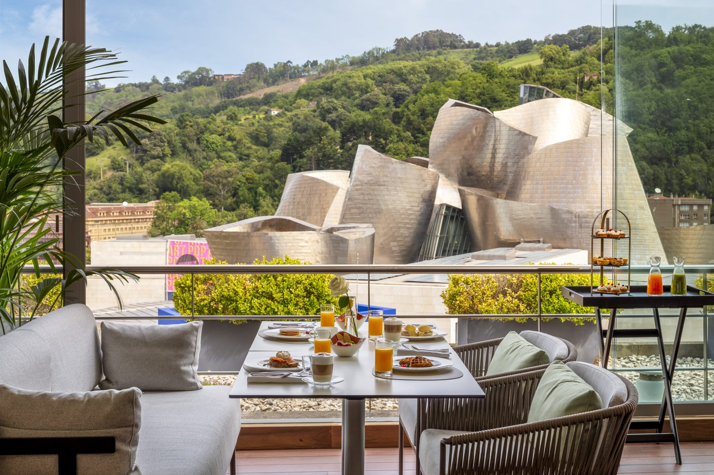
正对古根海姆博物馆的艺术设计酒店，现名 The Artist，原名 Gran Hotel Domine。适合重视设计和博物馆景观的旅客。
博物馆景观；屋顶餐饮；健身及康体
选房提示：Smart Inner View 是内景房；想看古根海姆需选择名称中明确写 Guggenheim View 的房型。
Alameda de Mazarredo 61, 48009 Bilbao
| 房型 | 人工预算／晚 |
|---|
| Smart Inner View 内景房 | €220–340
约 ¥1,760–¥2,720 |
| Superior City View 城景高级房 | €270–420
约 ¥2,160–¥3,360 |
| Deluxe Guggenheim View 博物馆景观豪华房 | €350–540
约 ¥2,800–¥4,320 |
公开近期用户样本约 €246，高级房约 €302–321；景观升级预算为人工判断。
酒店官网 ↗ · 预算参考来源 ↗ · 照片来源毕尔巴鄂 Carlton 酒店
Hotel Carlton Bilbao · 5 星 · 经典全服务
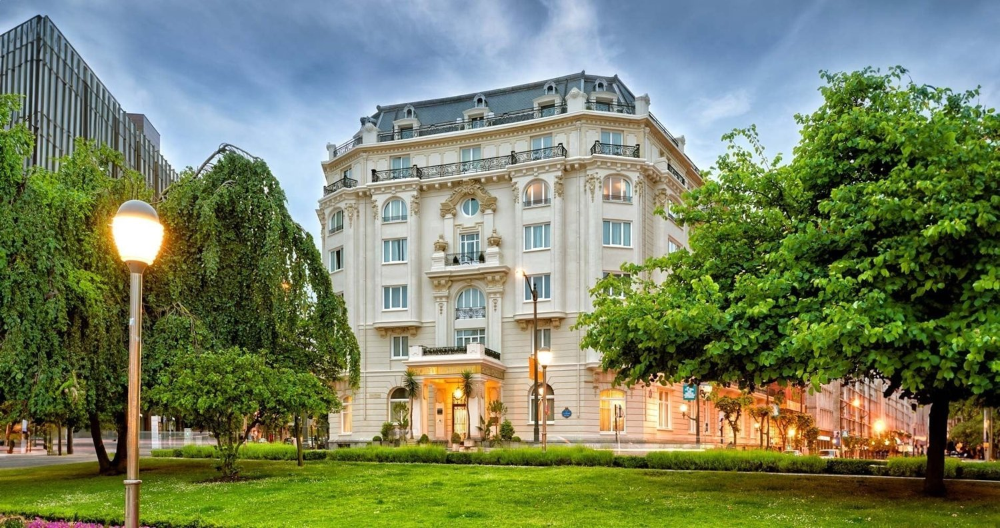
位于 Moyúa 广场的经典五星酒店，适合喜欢传统豪华风格并重视市中心交通便利的旅客。
市中心；餐厅；健身设施；经典建筑
选房提示：装饰风格偏传统，与艾迪逊的现代设计路线不同；预订时比较新旧房型照片。
Plaza Federico Moyúa 2, 48009 Bilbao
| 房型 | 人工预算／晚 |
|---|
| Double 双人房 | €160–270
约 ¥1,280–¥2,160 |
| Superior 高级房 | €210–340
约 ¥1,680–¥2,720 |
| Junior Suite 小套房 | €300–470
约 ¥2,400–¥3,760 |
公开聚合页约 €90 起；采用五星城市酒店的保守预算，不把促销最低价视为常态。
酒店官网 ↗ · 预算参考来源 ↗ · 照片来源毕尔巴鄂美利亚酒店
Meliá Bilbao · 5 星 · 现代全服务
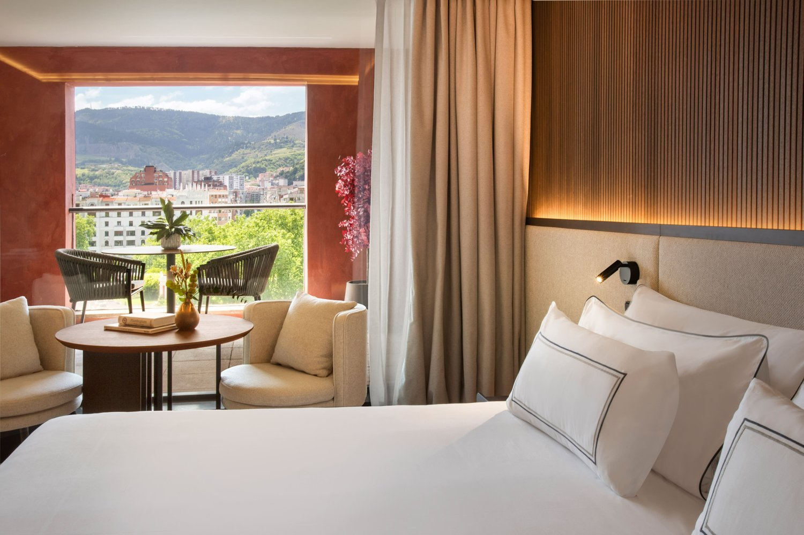
公园与河岸一带的现代五星酒店，适合希望兼顾步行游览、宽敞公共空间和泳池休闲的旅客。
泳池；餐厅；健身及康体；The Level 房型
选房提示：The Level 方案是否包含酒廊、早餐等权益，以当次订单为准。
Lehendakari Leizaola 29, 48001 Bilbao
| 房型 | 人工预算／晚 |
|---|
| Meliá Room 美利亚客房 | €180–300
约 ¥1,440–¥2,400 |
| Meliá with Estuary View 河景房 | €230–370
约 ¥1,840–¥2,960 |
| The Level Room 行政服务房 | €290–460
约 ¥2,320–¥3,680 |
公开其他日期标准房约 €144–206，近期用户样本约 €282；升级房预算另作人工估算。
酒店官网 ↗ · 预算参考来源 ↗ · 照片来源萨拉戈萨
萨拉戈萨 Palafox 酒店
Hotel Palafox · 5 星 · 经典全服务
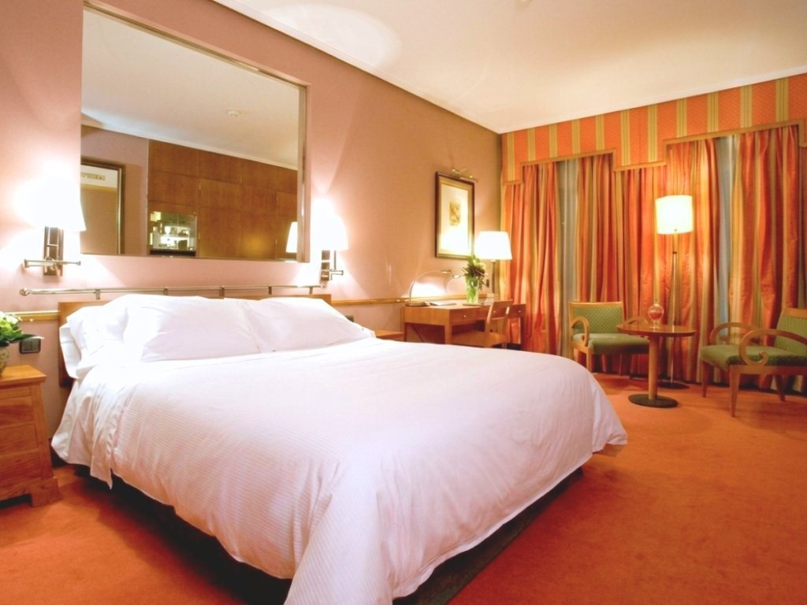
位于萨拉戈萨市中心的五星酒店，适合步行游览、餐饮和完整酒店服务之间的平衡。
屋顶季节性泳池；餐厅；健身房；停车
选房提示：偏经典商务豪华风格；部分高级房已更新，预订时核对实际房型图片。
Casa Jiménez s/n, 50004 Zaragoza
| 房型 | 人工预算／晚 |
|---|
| Double 双人房 | €130–210
约 ¥1,040–¥1,680 |
| Superior Double 高级双人房 | €170–270
约 ¥1,360–¥2,160 |
| Junior Suite 小套房 | €230–370
约 ¥1,840–¥2,960 |
公开双人房约 €98 起，近期用户样本约 €146；预算包含日期变化余量。
酒店官网 ↗ · 预算参考来源 ↗ · 照片来源萨拉戈萨 Reina Petronila 酒店
Hotel Reina Petronila · 5 星 · 现代设计
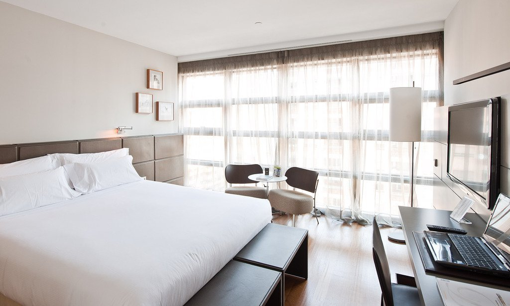
Rafael Moneo 设计建筑中的现代五星酒店，配有高层 SPA，适合喜欢现代空间和康体设施的旅客。
高层 SPA；室内泳池；健身房；停车
选房提示：位于 Aragonia 区域，离老城有距离，需要安排交通；SPA 权益按预订渠道确认。
Avenida Alcalde Sáinz de Varanda 2, 50009 Zaragoza
| 房型 | 人工预算／晚 |
|---|
| Double 双人房 | €130–220
约 ¥1,040–¥1,760 |
| Superior Double with living room 带起居区高级房 | €180–290
约 ¥1,440–¥2,320 |
| Junior Suite with living room 小套房 | €250–390
约 ¥2,000–¥3,120 |
公开聚合页约 €83 起；按带 SPA 的现代五星酒店预留较宽预算。
酒店官网 ↗ · 预算参考来源 ↗ · 照片来源萨拉戈萨 NH Collection Gran Hotel
NH Collection Gran Hotel de Zaragoza · 4 星 · 高端城市酒店
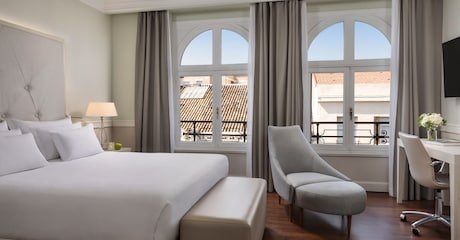
市中心历史建筑中的 NH Collection 酒店，适合重视步行位置、成熟服务和相对合理预算的旅客。
市中心；餐厅；健身房；历史建筑
选房提示：四星高端备选，公共设施规模与五星度假型酒店不同；停车通常另付费。
Joaquín Costa 5, 50001 Zaragoza
| 房型 | 人工预算／晚 |
|---|
| Superior 高级房 | €110–190
约 ¥880–¥1,520 |
| Premium 尊享房 | €150–240
约 ¥1,200–¥1,920 |
| Junior Suite 小套房 | €220–340
约 ¥1,760–¥2,720 |
公开其他日期高级房约 €83–85、双人房 €89 起；按 €110–190 做基础房预算。
酒店官网 ↗ · 预算参考来源 ↗ · 照片来源加的斯
加的斯 Parador Atlántico 酒店
Parador de Cádiz · 4 星 · 现代海景
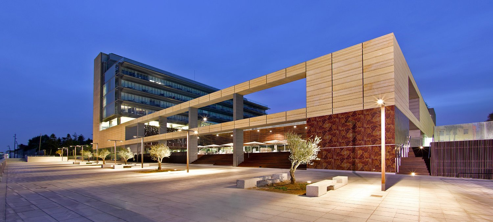
老城海边的现代设计酒店，适合希望同时兼顾老城游览、海景和泳池休闲的旅客。
海景；泳池；SPA；餐厅
选房提示：优先比较具体海景方向和露台条件；SPA 与泳池开放安排需确认。
Avenida Duque de Nájera 9, 11002 Cádiz
| 房型 | 人工预算／晚 |
|---|
| Doble Estándar 标准双人房 | €180–300
约 ¥1,440–¥2,400 |
| Doble Superior 高级双人房 | €240–390
约 ¥1,920–¥3,120 |
公开其他日期标准房约 €130–155、双人房约 €157 起；海景和季节影响明显。
酒店官网 ↗ · 预算参考来源 ↗ · 照片来源加的斯 Áurea Casa Palacio Sagasta 酒店
Áurea Casa Palacio Sagasta · 4 星 · 宫邸精品
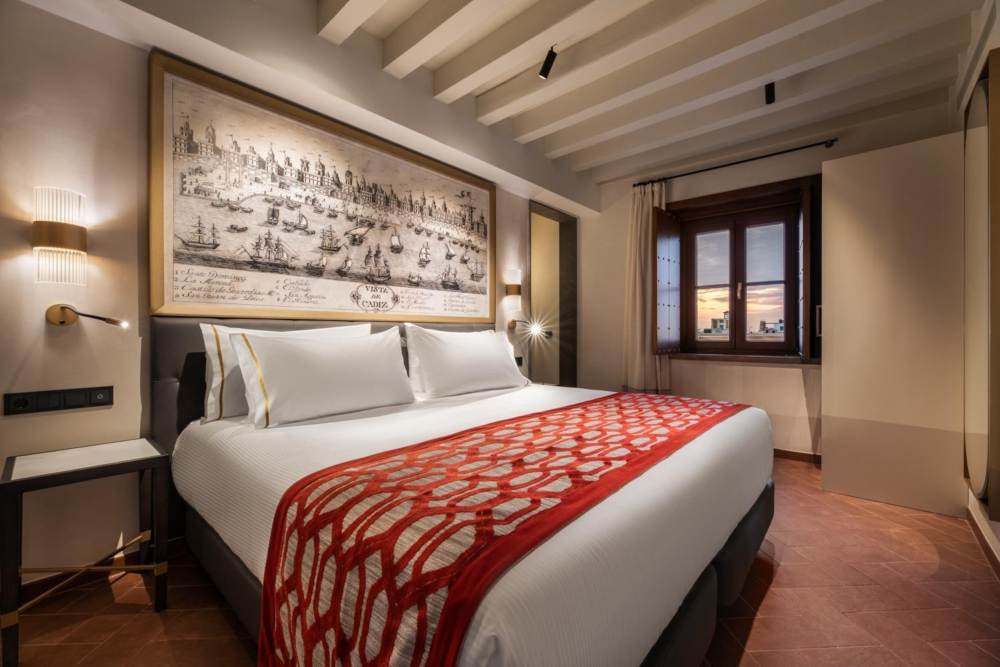
老城历史宅邸改造的 Áurea 精品酒店，适合喜欢设计、历史建筑和步行游览的旅客。
历史宅邸；SPA；健身房；精品客房
选房提示：基础房、法式阳台房和塔楼套房差异明显；SPA 是否含在房价中另核对。
Sagasta 1, 11004 Cádiz
| 房型 | 人工预算／晚 |
|---|
| Double 双人房 | €170–280
约 ¥1,360–¥2,240 |
| Double with French balcony 法式阳台房 | €210–340
约 ¥1,680–¥2,720 |
| Junior Suite 小套房 | €300–460
约 ¥2,400–¥3,680 |
公开聚合页约 €125 起；按老城宫邸精品酒店的春季住宿需求留出余量。
酒店官网 ↗ · 预算参考来源 ↗ · 照片来源加的斯 Casa Cánovas 精品酒店
Hotel Casa Cánovas · 设计精品 · 小型酒店
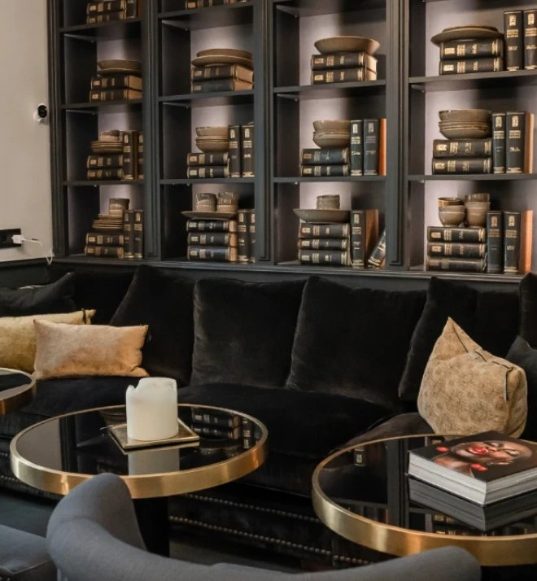
仅 10 间客房的历史宅邸精品酒店，LUZIO 室内设计和精细材质是特色，适合偏爱 Only YOU 式设计氛围的旅客。
LUZIO 室内设计；庭院；餐厅；小型私密空间
选房提示：按设计精品备选收录，设施规模不等同大型五星；历史建筑的无障碍和楼层安排需提前沟通。
Cánovas del Castillo 32, 11001 Cádiz
| 房型 | 人工预算／晚 |
|---|
| Standard Double 标准双人房 | €170–280
约 ¥1,360–¥2,240 |
| Deluxe 豪华房 | €220–350
约 ¥1,760–¥2,800 |
Expedia 2026-10-04 两位成人一晚样本约 €158 含税（其他日期参考）。
酒店官网 ↗ · 预算参考来源 ↗ · 照片来源梅里达
梅里达 ILUNION Palace 酒店
ILUNION Mérida Palace · 5 星 · 历史全服务
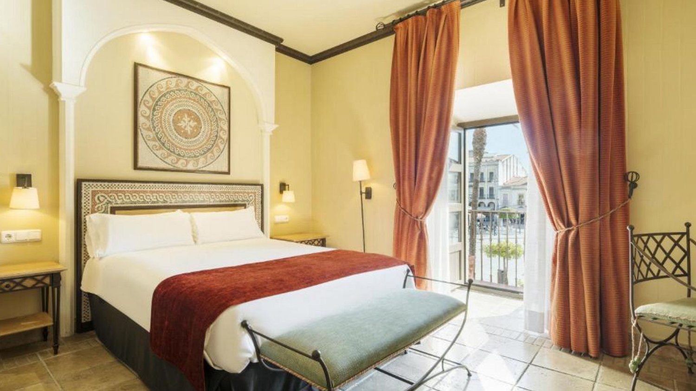
位于西班牙广场的历史建筑五星酒店，适合希望住在核心区、步行游览罗马遗迹的旅客。
广场位置；餐厅；小型屋顶季节性泳池；健身房
选房提示：酒店泳池较小，适合短暂放松；停车和早餐按方案另付费。
Plaza de España 19, 06800 Mérida
| 房型 | 人工预算／晚 |
|---|
| Standard Double 标准双人房 · 25㎡ | €110–190
约 ¥880–¥1,520 |
| Junior Suite 小套房 · 45㎡ | €180–300
约 ¥1,440–¥2,400 |
公开低位 €64 起，近期页面参考统计约 €139–194／晚；按 €110–190 规划基础房。
酒店官网 ↗ · 预算参考来源 ↗ · 照片来源梅里达国营修道院酒店
Parador de Mérida · 4 星 · 修道院历史酒店
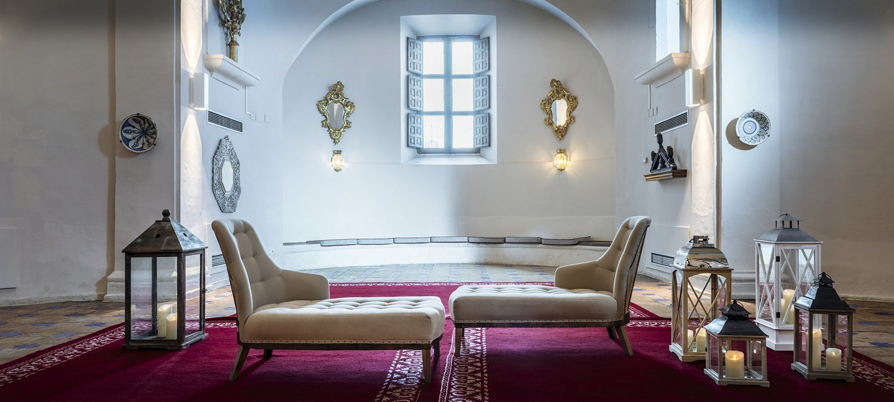
位于市中心的国营修道院酒店，适合喜欢历史庭院、传统陈设和餐厅服务的旅客。
历史庭院；餐厅；季节性泳池；健身房
选房提示：传统四星风格，与现代设计五星不同；步行可串联中心区古迹。
Almendralejo 58, 06800 Mérida
| 房型 | 人工预算／晚 |
|---|
| Doble Estándar 标准双人房 | €110–190
约 ¥880–¥1,520 |
| Doble Superior 高级双人房 | €150–250
约 ¥1,200–¥2,000 |
| Suite 套房 | €230–360
约 ¥1,840–¥2,880 |
公开其他日期标准房约 €74–85，近期平均参考约 €102–136；目标日期另核价。
酒店官网 ↗ · 预算参考来源 ↗ · 照片来源梅里达 AZZ Medea 酒店
AZZ Mérida Medea Hotel · 4 星 · 舒适备选（档次略低）
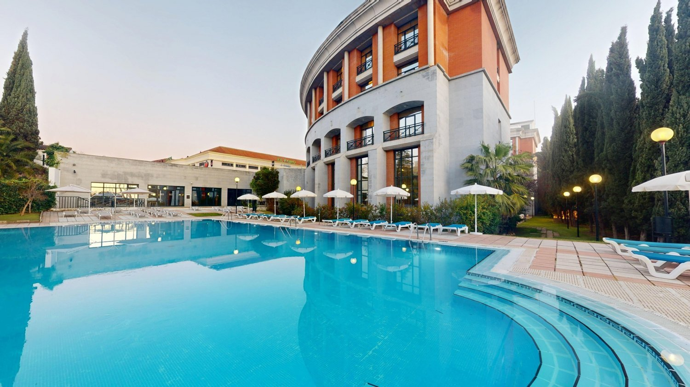
提供餐饮、泳池和宽敞客房的四星酒店，适合作为梅里达第三家实用备选。整体档次低于艾迪逊与高端精品酒店。
季节性泳池；餐厅；宽敞客房；停车
选房提示：位于老城外，官网介绍步行至历史中心约 20 分钟。若坚持更高档次，优先前两家。
Avenida de Portugal s/n, 06800 Mérida
| 房型 | 人工预算／晚 |
|---|
| Double 双人房 | €90–150
约 ¥720–¥1,200 |
| Superior Double 高级双人房 | €130–210
约 ¥1,040–¥1,680 |
公开聚合页低位样本约 US$65（美元，非欧元）；只作价格层级参考，人工欧元预算 €90–150。
酒店官网 ↗ · 预算参考来源 ↗ · 照片来源